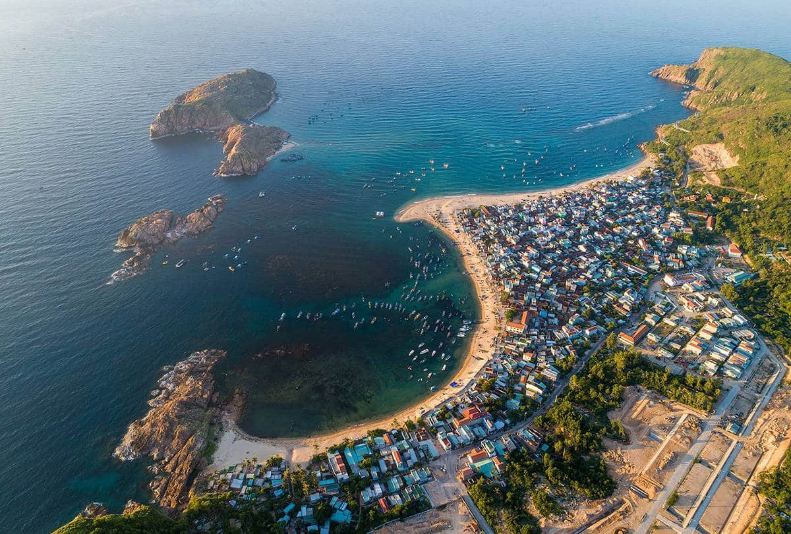
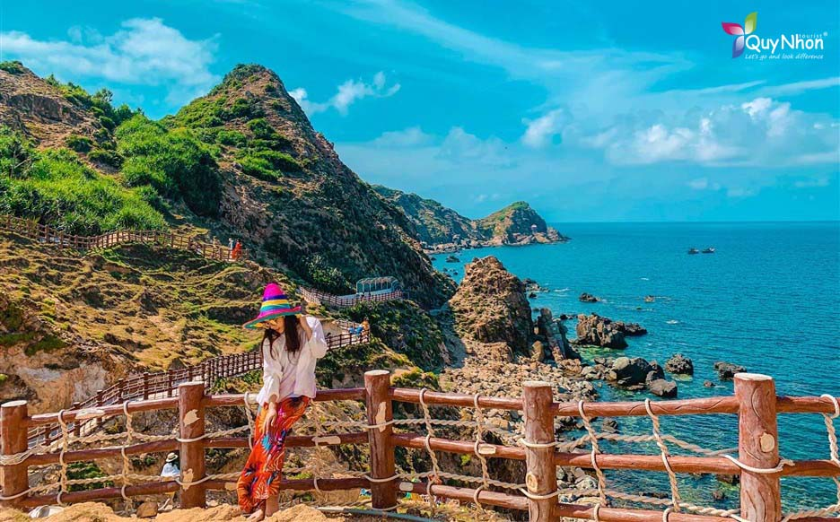
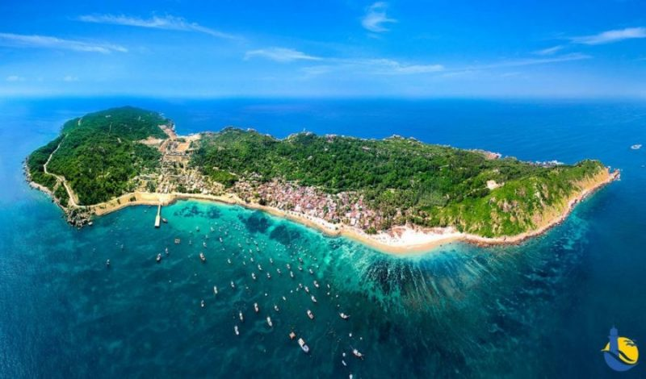
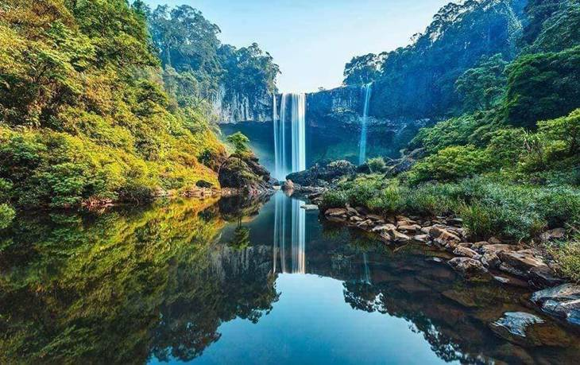
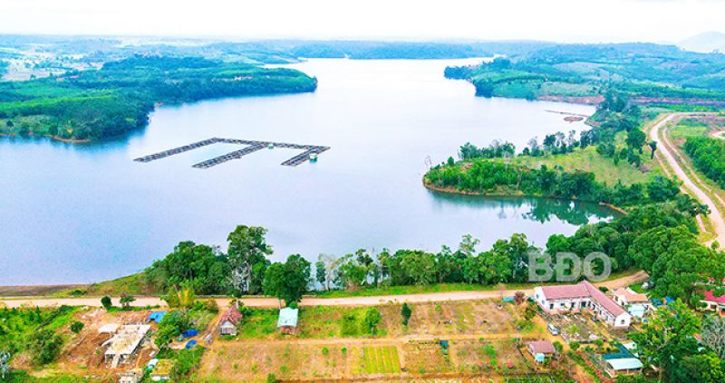
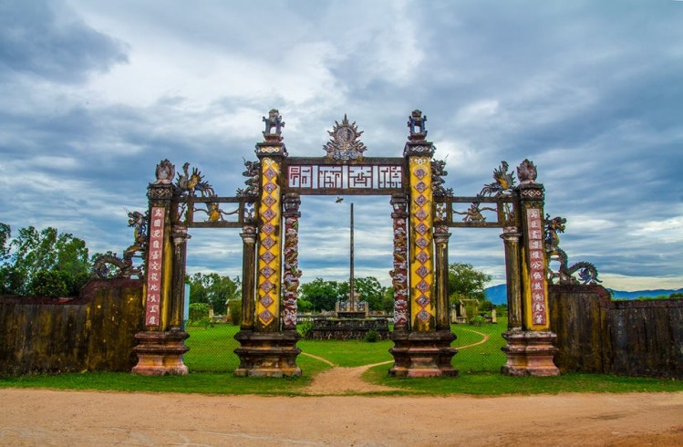
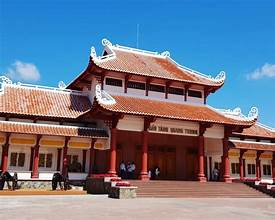
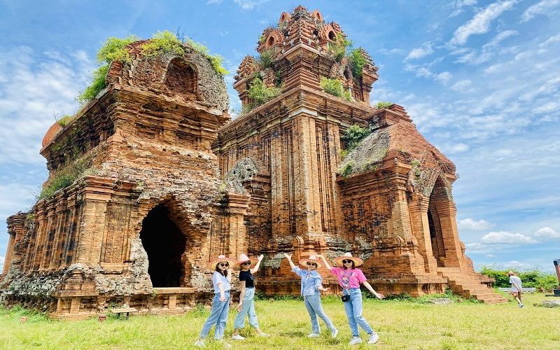
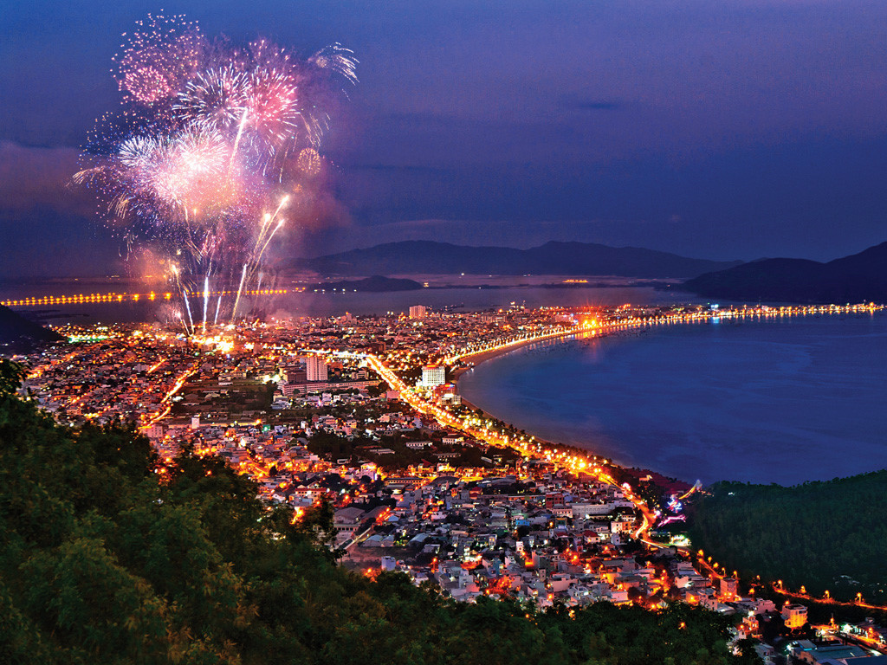

Bình Định được thiên nhiên ưu đãi với nhiều địa danh và danh lam thắng cảnh nổi tiếng, kết hợp hài hòa giữa biển, núi, đảo và di tích lịch sử. Mỗi địa điểm không chỉ mang vẻ đẹp riêng mà còn gắn liền với văn hóa và lịch sử của vùng đất võ anh hùng.
Nổi bật nhất là biển Quy Nhơn, với bãi cát trắng mịn, làn nước trong xanh và không gian yên bình. Không xa trung tâm thành phố, Kỳ Co – Eo Gió được ví như “thiên đường biển đảo” của Bình Định, thu hút du khách bởi vẻ đẹp hoang sơ, kỳ vĩ và thơ mộng. Ngoài ra, Cù Lao Xanh là hòn đảo xanh mát, mang vẻ đẹp nguyên sơ, rất thích hợp cho du lịch khám phá và nghỉ dưỡng
  Bình Định còn sở hữu nhiều cảnh quan núi rừng và sông suối đẹp như thác K50, đèo An Khê, núi Bà… Những địa danh này mang vẻ đẹp hùng vĩ, gắn liền với đời sống sinh hoạt và sản xuất của người dân miền núi, đồng thời là điểm đến hấp dẫn cho du lịch sinh thái.
 Bên cạnh cảnh quan thiên nhiên, Bình Định còn nổi tiếng với hệ thống di tích lịch sử – văn hóa phong phú. Tiêu biểu là các tháp Chăm cổ như tháp Bánh Ít, tháp Đôi, tháp Dương Long – những công trình kiến trúc độc đáo, minh chứng cho một nền văn hóa Chăm Pa rực rỡ. Ngoài ra, Bảo tàng Quang Trung, thành Hoàng Đế cũng là những địa danh mang giá trị lịch sử sâu sắc.
  Ngày nay, các địa danh và danh lam thắng cảnh của Bình Định không chỉ góp phần bảo tồn giá trị tự nhiên và lịch sử mà còn trở thành động lực phát triển du lịch, thu hút du khách trong và ngoài nước. Vẻ đẹp đa dạng của Bình Định đã và đang góp phần quảng bá hình ảnh một vùng đất giàu bản sắc, thân thiện và đầy tiềm năng.
